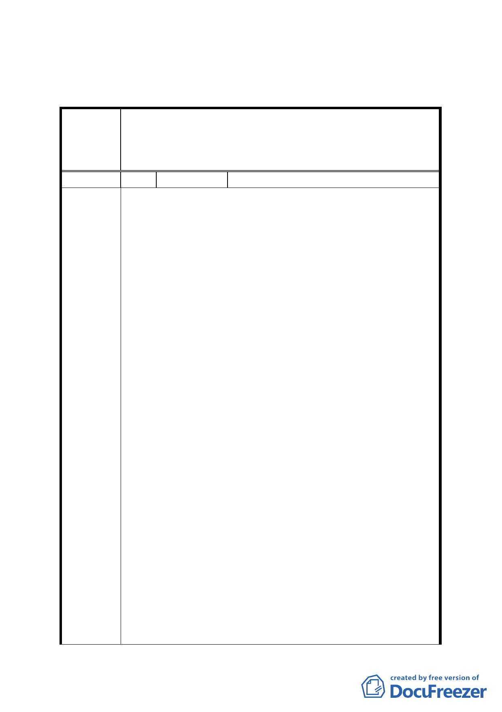

臺北市都市計畫委員會公民或團體所提意見綜理表
修訂「『修訂台北市土地使用分區(保護區、農業區除外)計畫
案
名
(通盤檢討)案』內有關八德路四段、東寧路、縱貫鐵路、八
德路四段 106 巷所圍地區(原唐榮鐵工廠)土地使用計畫案」
開發方式細部計畫案
編 號 1-b 陳情人 威○開發投資股份有限公司
主旨：為對貴會於民國103年1月23日所召開之第654次委員會
審議「修定「『修訂台北市土地使用分區（保護區、農
業區除外）計畫（通盤檢討）案』內有關八德路四段、
東寧路、縱貫鐵路、八德路四段一○六巷所圍地區（原
唐榮鐵工廠）土地使用計畫案」開發細部計畫案」過程
中主席無視各委員意見，強行裁示通過解除整體開發
案，損害本公司權益，提出異議，詳如說明，請查照。
說明：
一、旨揭第654次委員會議審議過程中，委員確有提「解除
整體開發後回饋應重新審視」、「威京幫忙捐百分之三十
的權利變換價值」、「分開後各繳各的回饋金」、「個別計
畫，但是不要影響原來捐獻的百分之三十的權益」、「需
有彌補機制、如折算容積率等」、「開發人需自行捐贈」
等各項提議，並更有委員要求將其提案列入結論，然本
陳情理由
次會議除未對都發局所提出之計畫書內容進行討論
外，會議主席張副市長金鶚先生，對於發言委員就解除
整體開發後所產生的各種回饋金爭議、捐地爭議，及就
原捐地者折算容積率等提議等更置若罔聞，拒絕就此種
種解除整體開發後可能產生的西北側地主是否須捐
地、威京公司等所作之捐地及回饋金如何處置進行討
論，亦不做成任何附帶建議，並於未經討論之情形下強
行裁示通過都發局所提之計畫書，解除威京公司整體開
發權，顯見張副市長所自稱之審議結論於各委員實際陳
述完全不同，委員會討論之內容與主席做成之決議不
符。
二、依照80年2月13日公告之都市計畫說明書京都公司代西
北角地主捐贈百分之三十土地，西北角二期地主之土地
因而由工業區變更為第三種商業區，實質上獲有重大利
益，多位委員對此提出各種補償的意見完全符合公平正
義，會議主席張副市長卻完全不予理會，強行通過解除
-2-